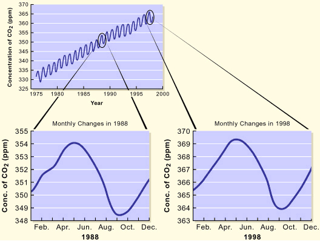

OBJECTIVE: to determine the cause of monthly fluctuations in CO2 concentration in the atmosphere
Let's look at the data more closely. Scientists plotted the average monthly concentrations of CO2 from 1975 to 1999 in the first graph below. Notice the peaks and valleys. What could cause these monthly changes? Scientists then created more detailed graphs demonstrating the monthly fluctuations of atmospheric CO2 during specific years. View the bottom two graphs for 1988 and 1998.

Answer the following questions in the boxes provided. When you have completed a question, click the Check Your Answer button for feedback.
1. In both cases, what month is the CO2 level highest?
2. In what month is the CO2 level the lowest?
3. Predict what the graph would look like for 1985.
Given that the Mauna Loa Observatory is located in the Northern Hemisphere, can you suggest a cause for the annual fluctuations in CO2 levels? Think about what you have learned about photosynthesis in this chapter and think about what happens to plants in the fall and winter in the Northern Hemisphere.
When you are ready, go to page